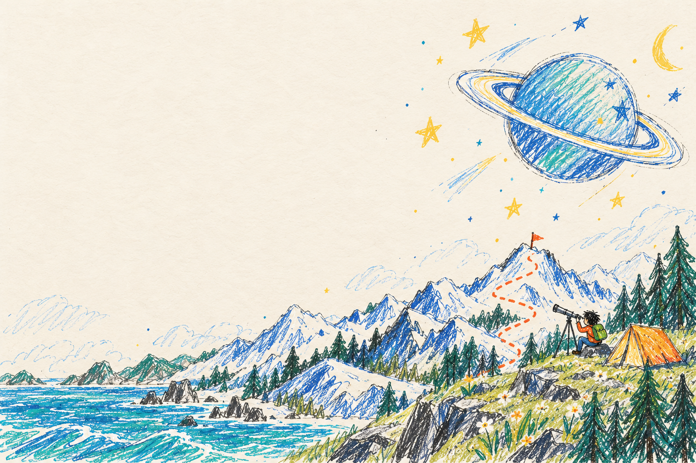
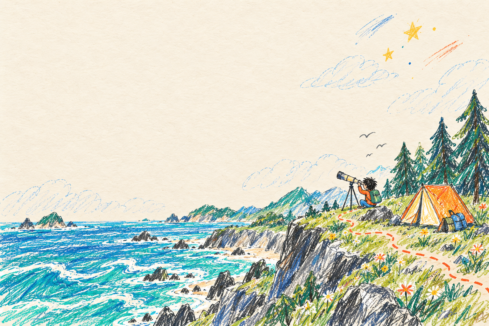

Claude Code
在终端中阅读代码、修改文件和运行开发任务。
产品文档 ↗点击「赛博法师」开启探索

02
分享经验，一起成长。
我们希望建立一个真诚、务实、开放的熟人社群。在 AI 技术快速演进、信息不断涌现的时代，彼此分享、共同探索，把对变化的焦虑转化为学习与行动，把零散的经验和灵感沉淀为真正有用的方法、产品与连接。
抱团打怪，互通有无，帮助彼此更从容地理解变化、跟上节奏，少一些无谓的焦虑，多一些确定的行动。
从具体问题和真实场景出发，注重方法是否可复用、能提高效率。少谈宏大叙事，多讲亲自实践和验证过的经验。
挖掘工作与生活中的实际痛点，碰撞产品构想，提供来自行业、业务和用户的不同视角，找到值得解决的问题。
倡导创新、协作与开源精神，不说教、不营销、不变现。我们希望在这里收获的不只是技巧，也有能够彼此启发、共同成长的朋友。
准备：应用场景 → 具体做法 → 实际效果 → 适用边界。可以带截图、示例，或用电脑现场演示。

03
带上电脑，见面交流。
AI 技巧与使用难题。
Word 交付、Skill 与团队规范。
AI 使用中的难题与小技巧。
档案说明 / 仅保留当时公开的邀请信息，未公开第三期纪要。
参会成员登录后，可查阅已开放的完整纪要并留言。成员登录 ↗
按场景筛选，或搜索名称与用途。
16 个工具 / 全部
在终端中阅读代码、修改文件和运行开发任务。
产品文档 ↗连接文件与应用，完成桌面 AI 协作。
访问官网 ↗用 AI 推进编程任务，查看和审阅代码改动。
访问官网 ↗收藏链接与摘录，集中管理稍后阅读的资料。
访问官网 ↗在代码编辑器中使用 AI 编写和修改项目。
访问官网 ↗将网页采集为 Markdown 或 JSON。
访问官网 ↗将 PDF、Office 和图片解析为结构化内容。
GitHub 仓库 ↗基于上传的资料进行问答、摘要与整理。
访问官网 ↗用本地 Markdown 笔记构建个人知识库。
访问官网 ↗通过命令行创建、检查和修改 Office 文档。
GitHub 仓库 ↗连接不同模型，完成终端、桌面或 IDE 编程任务。
访问官网 ↗转换 Markdown、Word、PDF 等文档格式。
访问官网 ↗通过语音输入中文，也可结合上下文起草回复。
访问官网 ↗将口述整理成文字，直接输入常用应用。
访问官网 ↗将语音转为文字，支持本地运行。
GitHub 仓库 ↗用 AI 处理研究、文档、表格与本地文件。
访问官网 ↗没有找到匹配的工具。
参会成员登录后，可查阅集会摘录与完整纪要。
成员的主页、公众号与小工具。
摄影、小游戏与个人作品。
基金实务、法律工作与 AI 实践。
分享 AI Coding 实践的成员公众号。
欢迎提交成员的公开代码仓库。
欢迎提交成员的小工具与在线服务。
3 项公开展示 · 2 项待补充
06
有了答案，仍然需要好问题。
本站背景插画由 AI 辅助生成。
本站原创内容及插画的版权归本网页运营者「赛博法师 Cyber Casters」所有。第三方素材的相关权利归各自权利人所有。
如对本站内容或图片使用有疑问，请联系 info@cyber-casters.com。我们将及时核查并处理。